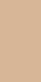

Os cabelos, assim como todas as demais células do nosso organismo, interagem o tempo inteiro com
o
ambiente interno e externo.
-  Você sabia que o cabelo é capaz de relatar inúmeras informações sobre seu estado de saúde e estilo de vida?
- Visto como um marcador de saúde, um fio de cabelo pode revelar muitas informações sobre sua saúde e estilo de vida.
- Isso porque o fio de cabelo é um dosímetro biológico, uma espécie de espelho que registra o ambiente em que determinada pessoa foi exposta. Exames nutricionais com informações preciosas sobre sua saúde podem ser obtidos a partir de um único fio do seu cabelo.
- Visto morfologicamente, o cabelo é uma haste fibrosa que é formada por diversas células.
- A mais conhecida entre a grande maioria das pessoas é a QUERATINA. A Queratina é formada por queratinócitos, que são células vivas que constituem grande parte das unhas, pele, cabelos e outras partes do corpo.
- A queratina é uma proteína de forma espiralada (a α-queratina) que dá sustentação ao cabelo, a qual fica imersa na matriz que é composta por células protéicas ricas em tirosina.